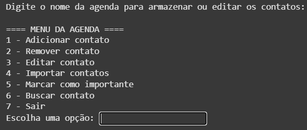

Manipulação de arquivos com Python.
É um sistema completo de agenda de contatos, que funciona direto no terminal. Ele permite criar, visualizar, editar, excluir, buscar e importar contatos, além de marcar contatos como importantes e calcular automaticamente a idade de cada pessoa com base na data de nascimento.
Python